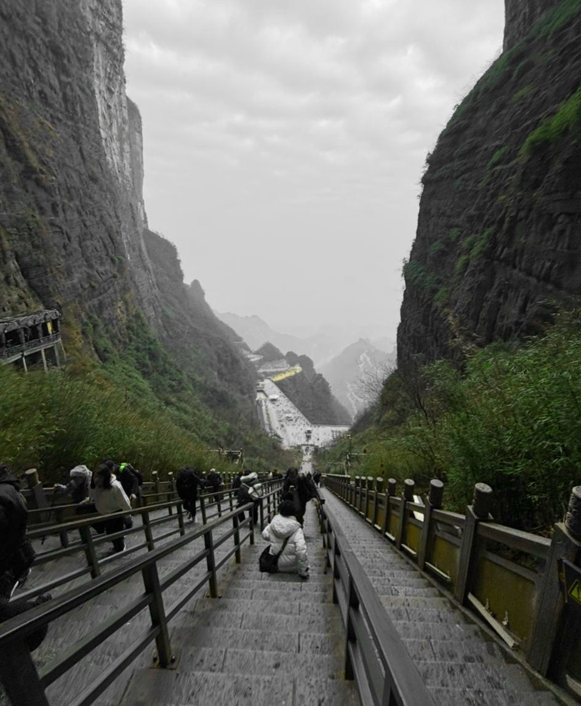
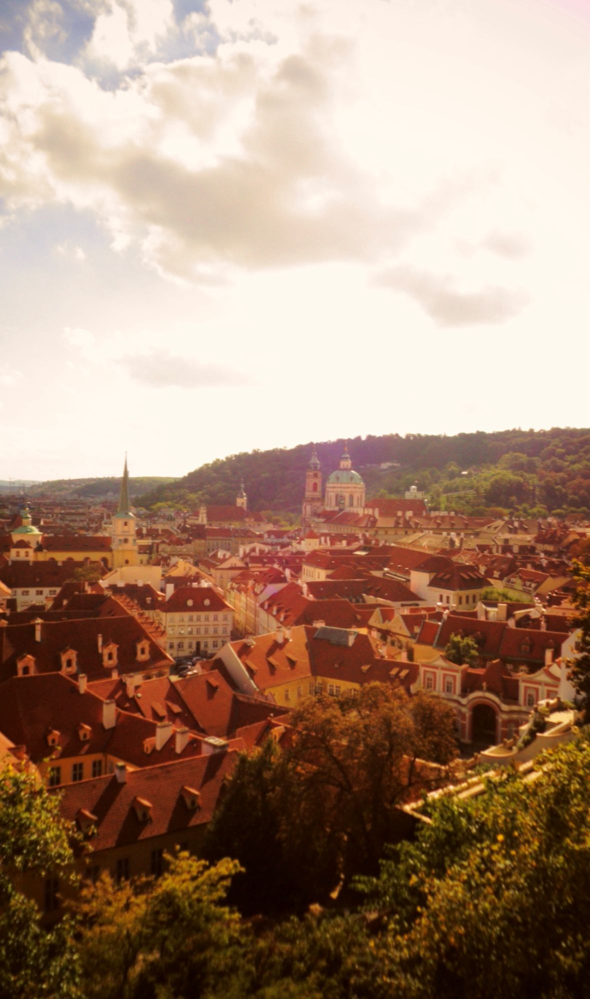
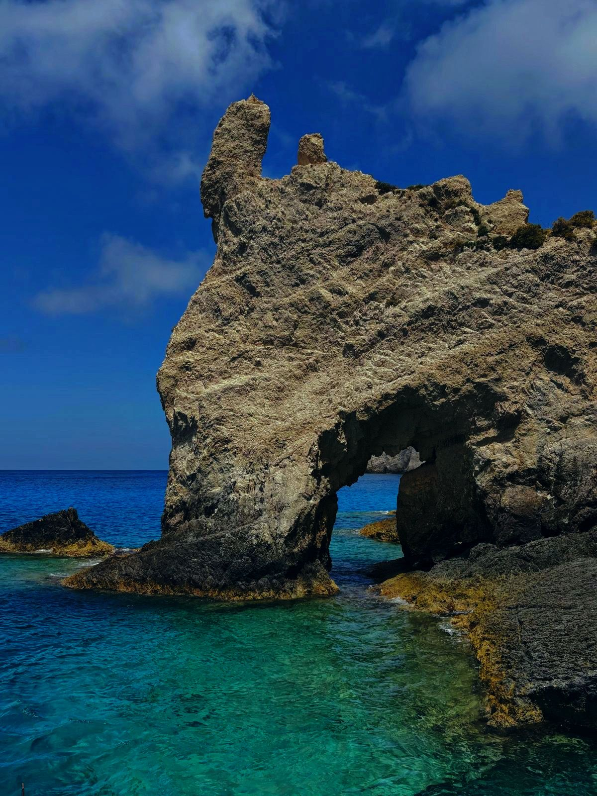
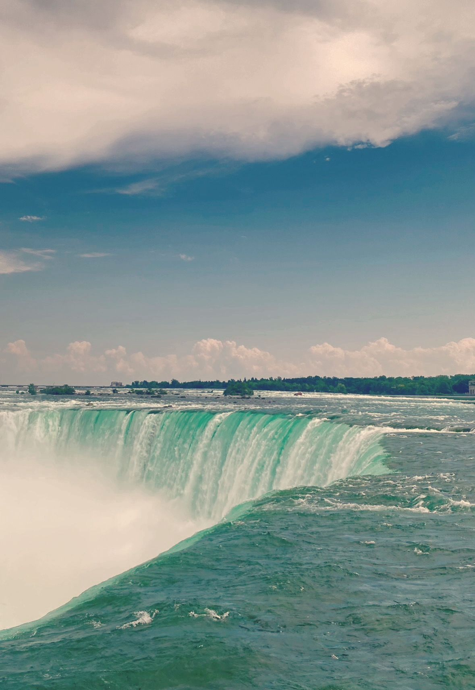
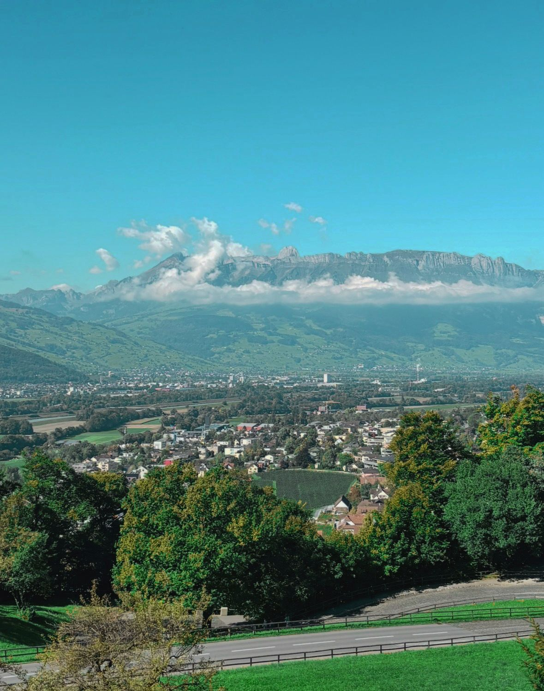
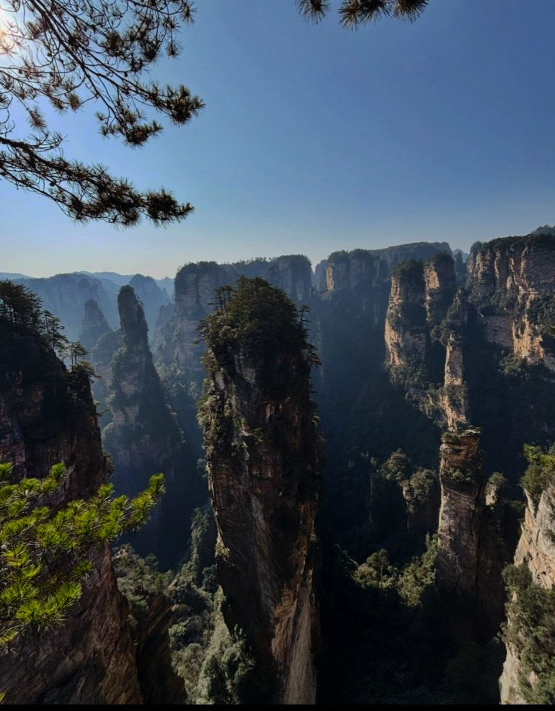

Stairway to Heaven
ChinaTehnica: Selectare de culoare
Scara Cerului din muntii Tianmen, una dintre cele mai spectaculoase constructii din lume, evidentiata prin selectarea si accentuarea culorilor dominante din imagine.
O calatorie vizuala prin cele mai spectaculoase peisaje ale lumii
Exploreaza galeriaFiecare colt al lumii ascunde peisaje care iti taie rasuflarea. Prin tehnici de editare fotografica, aceste imagini au fost prelucrate pentru a scoate in evidenta frumusetea lor naturala.

Tehnica: Selectare de culoare
Scara Cerului din muntii Tianmen, una dintre cele mai spectaculoase constructii din lume, evidentiata prin selectarea si accentuarea culorilor dominante din imagine.

Tehnici: Temperatura, Corectie de culoare, Luminozitate
Capitala de aur a Europei Centrale, cu arhitectura sa medievala, prelucrata prin ajustarea temperaturii de culoare, corectia cromatica si optimizarea luminozitatii.

Tehnici: Saturatie, Temperatura, Corectie de culoare, Umbre
Insula greaca renumita pentru apele sale turcoaz si stancile albe, cu saturatia ridicata pentru a accentua contrastul dintre cer, mare si uscat.

Tehnici: Contrast, Corectie de culoare, Temperatura, Lumini
Una dintre cele mai puternice cascade din lume, prelucrata prin amplificarea contrastului si ajustarea luminilor pentru a surprinde forta apei.

Tehnici: Inlocuitor de culoare, Contrast, Saturatie
Capitala micutului principat european, cu castelul sau iconic, prelucrata prin tehnica inlocuitorului de culoare si cresterea contrastului si saturatiei.

Tehnici: Luminozitate, Contrast
Masivul muntos invaluit in ceata din provincia Hunan, cu luminozitatea si contrastul optimizate pentru a accentua straturile de ceata si relieful dramatic.
Proiect realizat in echipa pentru disciplina Multimedia, Academia de Studii Economice din Bucuresti. Am ales tema Worldwide Landscapes pentru a documenta peisaje remarcabile din intreaga lume, prelucrate prin tehnici de editare fotografica studiate la curs.
Arghir Camelia
Apostu Victor Gabriel